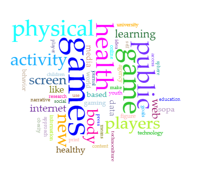
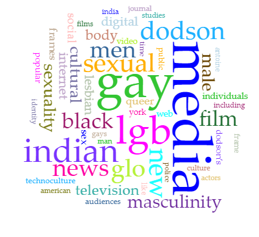
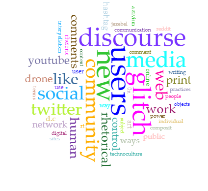

Read all of Volume 8 at tcjournal.org.

The following word clouds are a distant reading of a corpus composed from the online journal Technoculture.
The dominant keywords of Volume 8 are: digital, suicide, data, hacking, mecha, pilot, internet, online, information, world, and technology. Most of these are what one would expect from a publication about telecommunication and the cyber world. It’s so expected in fact that it’s downright boring and even a bit disappointing. With a word like ‘suicide’ front and center I would expect more supporting words that would have a more natural connection to the weighty subject matter. Words like human, self, behavior and people, are almost unreadable. I find this especially strange as there are only 5 articles. One of them is about Internet-Assisted Suicide and another is about abusive behavior in World of Warcraft.
Previous volumes feature more prominently words that imply an existential look at the human experience. Words like body, human, and healthy repeat across multiple volumes. Interestingly the word India also repeats in at least 3 volumes. Sex and sexuality also appear across volumes.
But for me the most interesting observation is how male dominated the keywords are in the corpus that is specifically drawn from the articles on gender and sexuality from Volume 4. I did a word cloud for these articles as it was the editor's decision to separate the articles into their own space. ‘Lesbian’ is the only female leaning word here. Race and culture make the cut as words like black, Indian, india, cultural, and culture. Again this is in contrast with other volumes, just as Volume 8 was distinguished by markedly less human related words. The word ‘feminist’ appears only in Volume 7 where it is in the company of words like drone, drones, posthumanist, posthuman, material, materiality, and body.
The word ‘women’ appears once in Volume 6 where it is barely readable among words that are overwhelmingly related to reproduction including the word ‘breeding’. Also in this cloud are empathetic words;aliens, abduction, body, victimization, powerlessness, power, authority, experience, experiencer, experiences, self, memory, narratives, articulate, report, told, describer, described, description, stories, discourse, disclosure. Again I would like to point out that the word ‘feminist’ is not in this cloud.
Volume 8
Read all of Volume 8 at tcjournal.org.
Volume 7
Read all of Volume 7 at tcjournal.org.

Volume 6
Read all of Volume 6 at tcjournal.org.

Volume 5
Read all of Volume 5 at tcjournal.org.

Volume 4
Read all of Volume 4 On Gender and Sexuality at tcjournal.org.

Read all of Volume 4 Other Critical Articles at tcjournal.org.
